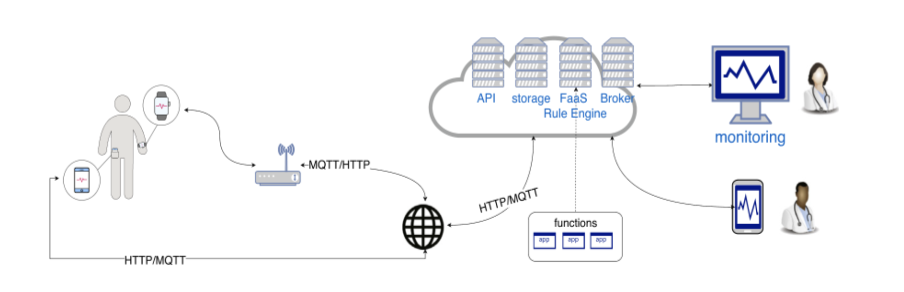
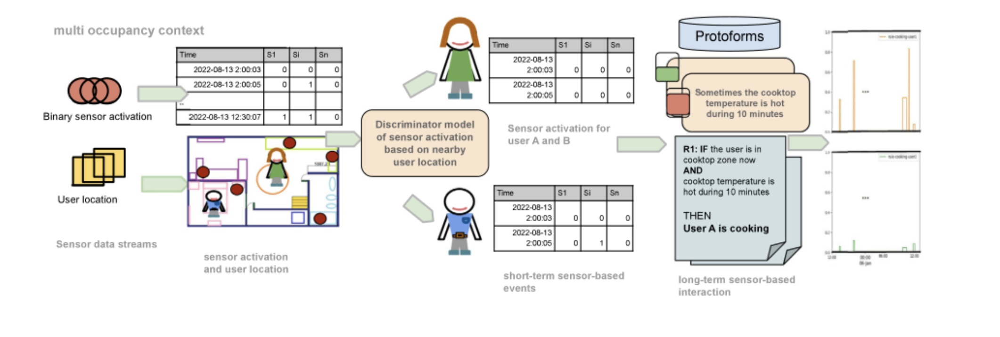

Ejemplo de aplicación: Internet of Medical Things
Cuidados de la salud es un campo de estudio que busca proveer servicios que permitan mejorar la salud de los individuos y comunidades a través de la prevención y tratamiento de enfermedades y otras afectaciones de la salud. El cuidado de salud puede verse limitado por situaciones complejas, como se observó durante la pandemia del COVID-19, o por no poder proveer cuidados durante largos periodos de tiempo a un paciente. Esto es importante en especial cuando hablamos de personas de la tercera edad, quienes son vulnerables y requieren observación continua. El IoT, con la gran variedad de sensores dispuestos en varias zonas del hogar del paciente, permite observar las actividades del mismo durante largos periodos de tiempo y de manera confiable. Es por esto que una de las principales aplicaciones del IoT es en el conocido como Internet of Medical Things (IoMT).
Los dispositivos de IoT se usan para obtener información acerca de las actividades que realiza el usuario. Por ejemplo, Djenouri et al. (2024) (Figura 3), propone un sistema en el cual se utilizan múltiples cámaras conectadas a internet para transmitir grabaciones para después con ayuda de técnicas de aprendizaje máquina identificar las actividades de las personas en los videos, y así, monitorearlas.

El monitoreo de estas acciones puede servir para, por ejemplo, profesionales de la salud quienes podrían consumir esta información para poder brindar servicios de atención médica en caso de ser necesario. Keshavarzian et al. (2019), en la Figura 4 propone un sistema el cual, en lugar de usar cámaras, se emplean datos recolectados desde el teléfono de un usuario y de un reloj inteligente para monitorear las actividades del paciente, lo cual puede servir para identificar situaciones que pueden atentar contra su salud, como podrían serlo caídas (esto es en especial importante en el caso de cuidados de la personas de la tercera edad).
Finalmente, si se tienen varios dispositivos de internet de las cosas en un entorno en el cual hay muchos habitantes, puede ser útil identificar qué personajes realizan qué acciones. Polo-Rodríguez et al. (2024) propone un sistema capaz de reconocer las acciones que cada persona en este entorno multiocupacional realiza.
